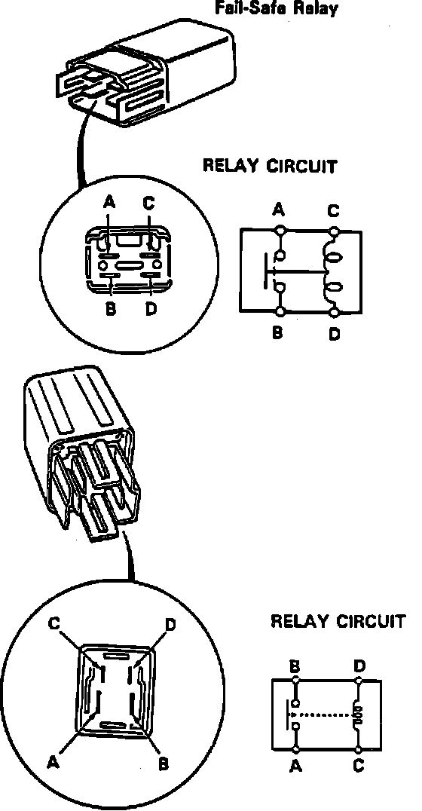
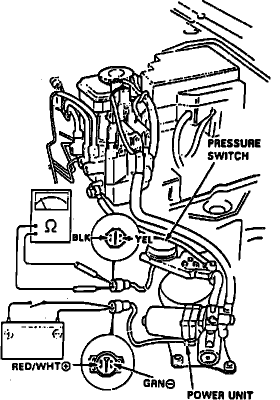

Brake Fluid Pump Relay: Testing and Inspection
Fig. 65 Failsafe/motor Relays:

Fig. 66 Solenoid Leak Test:

1. Remove fail-safe relay, then check for continuity between relay terminals A and B, Fig. 65. Continuity should not be indicated.
2. Connect 12 volt battery across terminals C and D. Continuity should be indicated between terminals A and B. Replace relay as needed.
3. Remove motor relay, then check for continuity between relay terminals C and D, Fig. 65. Continuity should be indicated.
4. Connect 12 volt battery across terminals C and D. Continuity should be indicated between terminals A and B. Replace relay as needed.